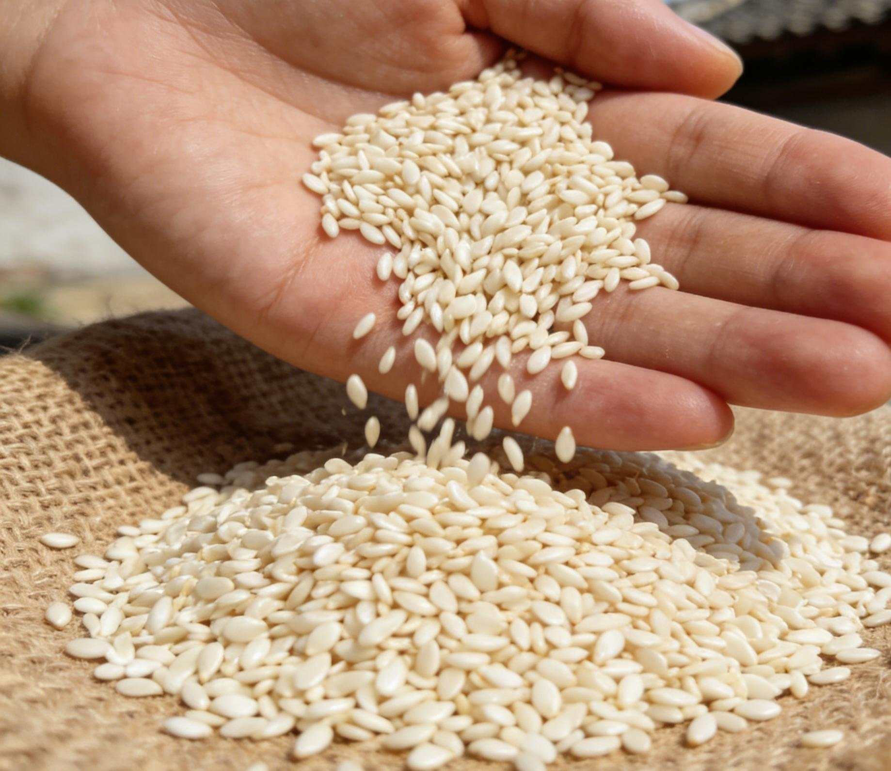
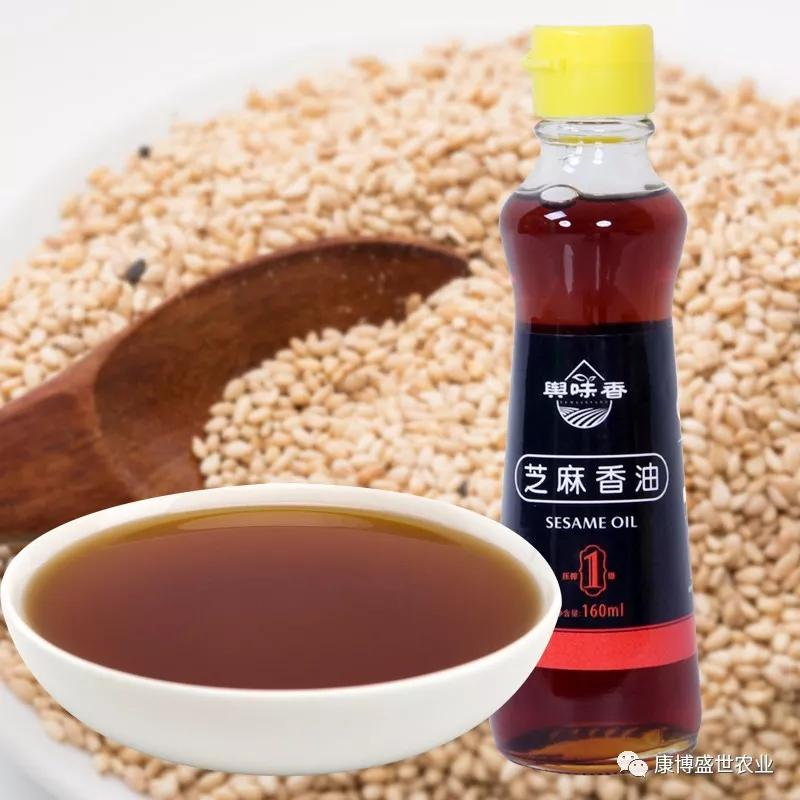
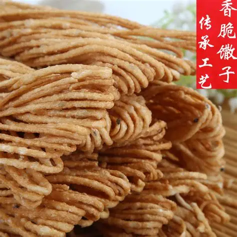

平舆特产 - 芝麻飘香 匠心臻品
以白芝麻为魂的特色物产，传承百年的工艺，是家乡最地道的味道

平舆白芝麻
平舆县地标核心特产，中国白芝麻之乡的金字招牌。平舆白芝麻籽粒饱满、色泽洁白如玉、皮薄肉厚，含油率高达55%以上，蛋白质与维生素E含量丰富。此地土壤疏松肥沃、气候温润，种出的白芝麻口感香醇无苦涩，是国家地理标志保护产品，更是制作芝麻酱、香油的上等原料，畅销全国乃至海外。

平舆白芝麻酱
选用平舆优质白芝麻为原料，经古法小火慢炒、石磨低速研磨制成，无任何添加剂与防腐剂。磨制出的白芝麻酱质地细腻柔滑，色泽乳白，芝麻原香浓郁醇厚，口感绵密不腻。可拌面、抹馍、凉拌菜，营养易吸收，是平舆人家中常备的调味佳品，更是馈赠亲友的特色好物。

白芝麻香油
平舆白芝麻香油采用传统水代法工艺制作，历经筛选、清洗、翻炒、磨浆、晃油等多道工序提炼而成。成品香油清澈透亮、色泽金黄，开盖后芝麻醇香扑鼻，香味持久不散。凉拌提鲜、热菜增香、煲汤调味皆宜，纯物理压榨保留营养，是纯天然的调味圣品，远近闻名。

平舆芝麻馓子
平舆经典传统糕点，以优质面粉、白芝麻香油、白芝麻粒为主要原料，经和面、醒面、搓条、盘条、拉抻、油炸制成。成品馓子金黄酥脆、细如发丝，入口嘎嘣作响，满口芝麻香，甜咸适中，久放不回潮。逢年过节，平舆人家都会制作芝麻馓子，既是待客小食，也是走亲访友的特色点心。

庙湾松花蛋
平舆县庙湾镇的名特产，距今已有百年历史，采用本地放养鸭蛋为原料，以传统无铅工艺腌制而成。成品松花蛋蛋壳易剥，蛋清呈琥珀色，晶莹剔透，蛋黄溏心流油，内里松花纹理清晰，口感鲜香软糯，无涩味无腥味。凉拌松花蛋是平舆餐桌上的经典凉菜，风味独特，老少皆宜。